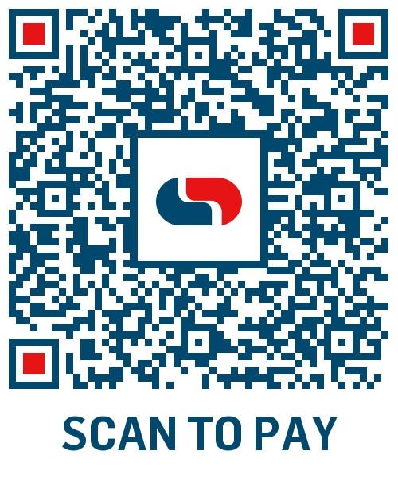

Contributions
Your contribution not only makes permanent change possible but, helps empower individuals and communities for lasting independence.
Contribution Option 1: Direct Bank Transfer/Electronic Fund Transfer (EFT)
Important Note: MajdiAid is currently in the process of formal NGO registration. Contributions are temporarily received through a dedicated personal account and will be transferred to the official charity account, once registration is complete. Full transparency is guaranteed.
Bank: Capitec
Account Name: TN WILLIAMS
Account Number: 1604923316
Branch Code: 470010
Reference: MajdiAid+Your Name
Contribution Option 2: Scan to pay
Scan the QR code below and complete as required.
Scan this code with your banking app to contribute instantly.
How Your Contribution Helps
Thank you, for your contribution.